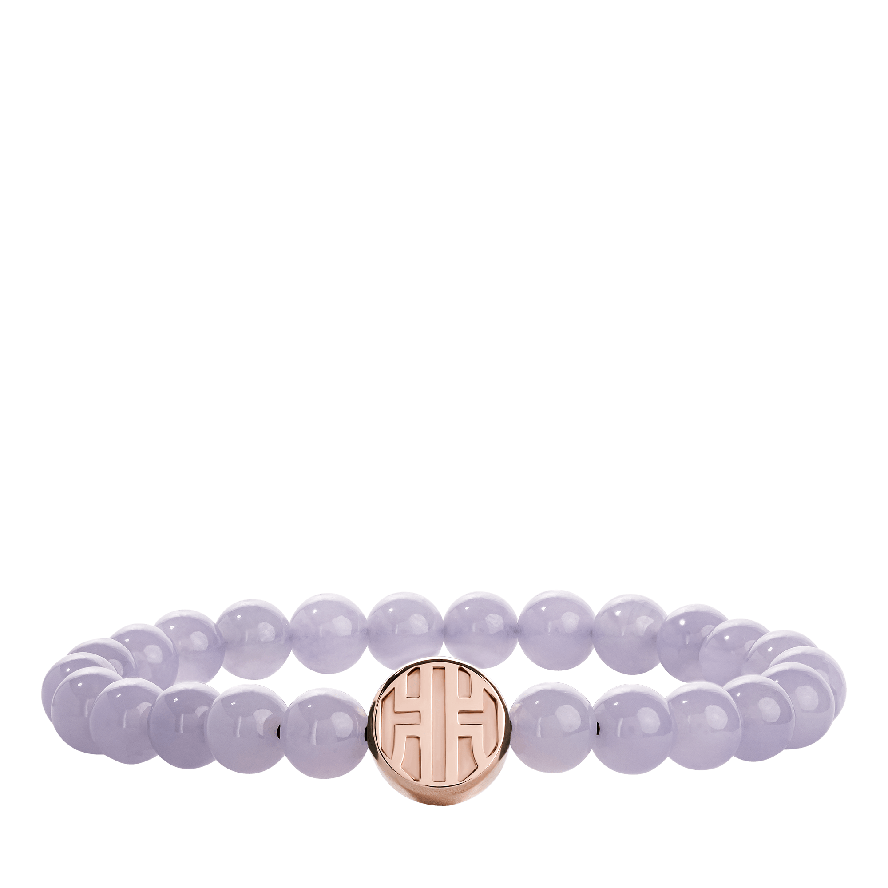
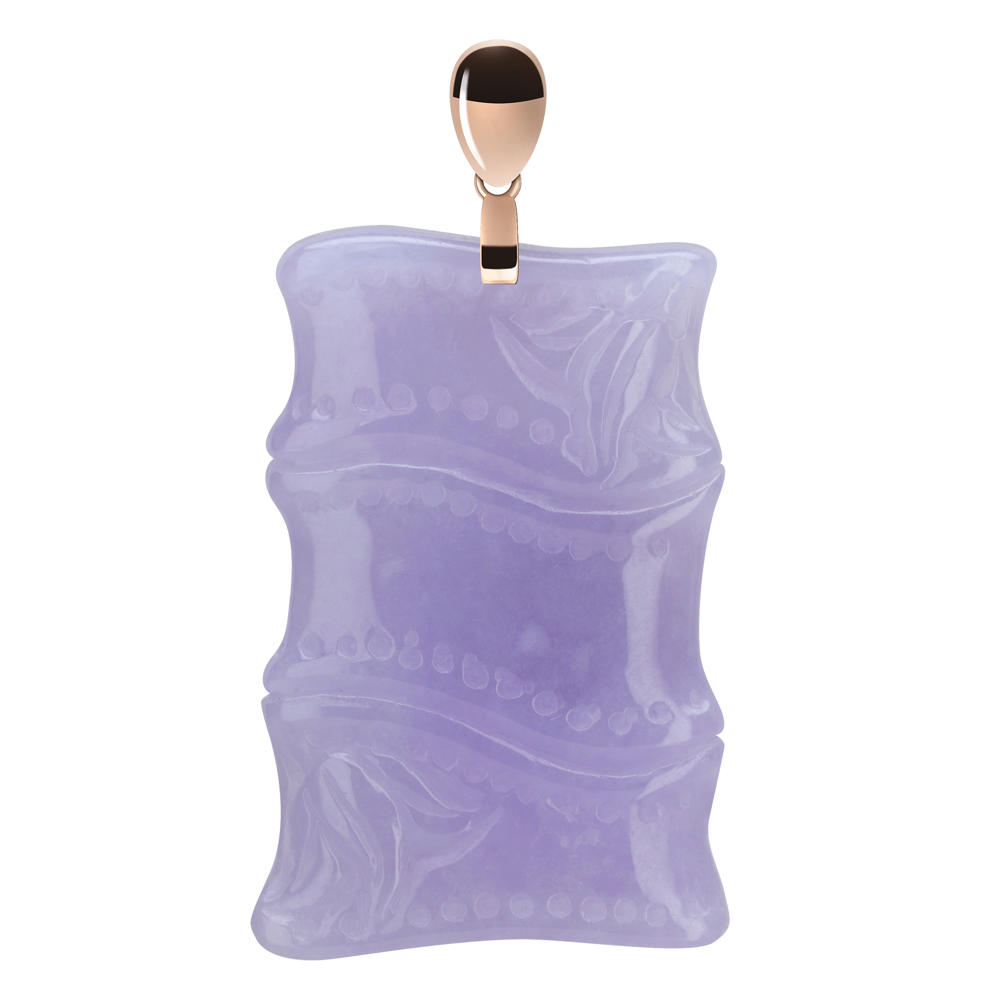

Koleksi Kristal / Personal Collection / Gelang
Keseimbangan dalam setiap untai.
Jelajahi“Pengingat harian untuk tetap tenang di tengah kesibukan.”

Kuarsa Kristal Alami
Material
8 mm
Diameter Manik
Rose Gold
Aksen Logam
Motif klasik pada charm aksen menjadi tanda tangan Anggara Treasures, diukir dengan tangan oleh pengrajin berpengalaman.

Tali elastis menyesuaikan pergelangan tangan dengan lembut, tanpa mengurangi keindahan setiap manik kristalnya.
Diukir tangan dengan motif klasik, menjadi aksen utama gelang.
Dipilih dari bongkahan kristal alami berkualitas tinggi.
Menyesuaikan pergelangan 15–19 cm dengan nyaman.